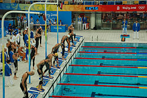
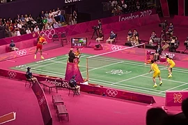

Student at AISSMS COE
I am in the third year of Computer Engineering. I love baking.
| Dates | Education |
|---|---|
| 2006-2012 | School- Rosary School |
| 2013-2018 | School- Kendriya Vidyalaya Southern Command |
| 2018-2020 | College- Mp Junior College |
| 2020- | College- AISSMS, COE |
| Html | ⭐⭐⭐ |
| Python | ⭐ |
| C++ | ⭐ |
Swimming is an individual or team racing sport that requires the use of one's entire body to move through water. The sport takes place in pools or open water (e.g., in a sea or lake). Competitive swimming is one of the most popular Olympic sports, with varied distance events in butterfly, backstroke, breaststroke, freestyle, and individual medley. In addition to these individual events, four swimmers can take part in either a freestyle or medley relay. A medley relay consists of four swimmers who will each swim a different stroke, ordered as backstroke, breaststroke, butterfly and freestyle. |
 |
Badminton is a racquet sport played using racquets to hit a shuttlecock across a net. Although it may be played with larger teams, the most common forms of the game are "singles" (with one player per side) and "doubles" (with two players per side). Badminton is often played as a casual outdoor activity in a yard or on a beach; formal games are played on a rectangular indoor court. Points are scored by striking the shuttlecock with the racquet and landing it within the opposing side's half of the court. |
 |